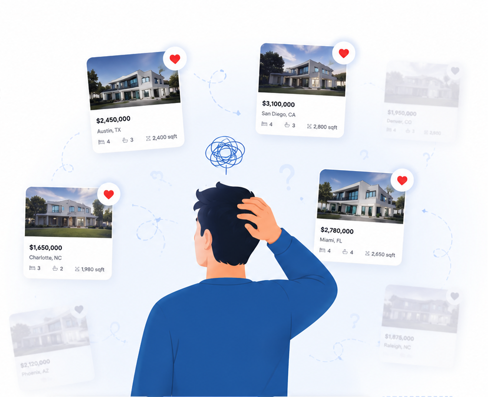
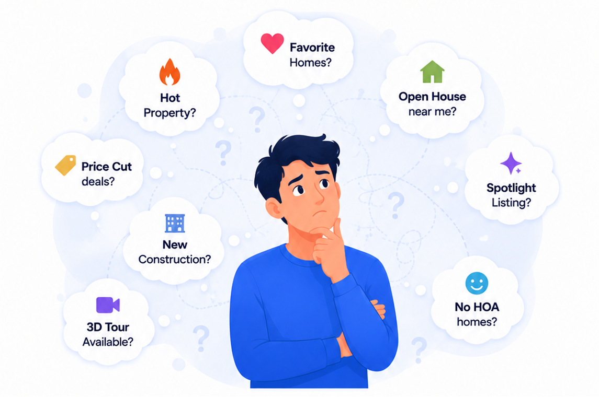

Pick a feature to explore. Both shipped for real home buyers on Houzeo.com.

Buyers save homes across a dozen tabs and lose track of what they liked. Collections lets them save, group and revisit homes without leaving the browsing journey.

Key signals like price cuts and open houses were buried inside listings. Quick Filters surfaces them as scannable tags right on the card.